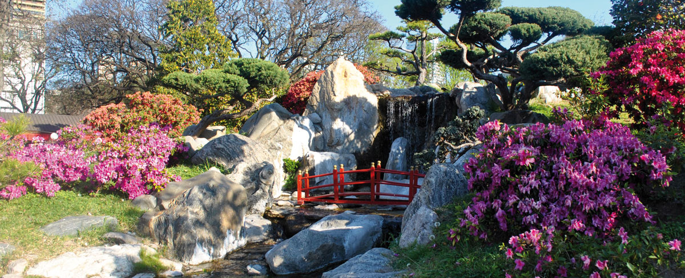

Caba
La Ciudad autónoma de Buenos Aires es la gran capital cosmopolita de Argentina. Su centro es la Plaza de Mayo, rodeada de imponentes edificios del siglo XIX, incluida la Casa Rosada, el icónico palacio presidencial que tiene varios balcones. Entre otras atracciones importantes, se incluyen el Teatro Colón, un lujoso teatro de ópera de 1908 con cerca de 2,500 asientos, y el moderno museo MALBA, que exhibe arte latinoamericano.
Lugares
Te recomendamos algunos de los lugares más icónicos a los que podés ir cuando visites la Ciudad.

El Cabildo de Buenos Aires ocupa el mismo lugar desde 1580, pero su edificio sufrió sucesivas modificaciones. Las primeras referencias de esta emblemática construcción provienen de principios del siglo XVII. Para 1608, tenía paredes de adobe y techo de paja. En su interior, había un salón para reuniones y otro que funcionaba como cárcel. En 1610, doscientos años antes de la Primera Junta, el techo se cubrió de tejas. Más tarde, a mediados de siglo, le hicieron un balcón y torres de madera y barro. Pero, en 1725, estaba en muy mal estado y fue demolido. Entonces, comenzó a levantarse uno nuevo, a partir de un proyecto del arquitecto italiano Andrés Blanqui. Así, comenzó a tomar forma el Cabildo tal como lo conocemos. El primer piso estuvo listo en 1748 y, en 1773, apareció la torre -un poco más alta que la actual- cuya cúpula se cubría con un techo de lata. ¡Sí, de lata! Ese fue el Cabildo de los patriotas de 1810 y esa fue su época de mayor esplendor.
Más información...Caminito es uno de los paseos más emblemáticos de la Ciudad y de los atractivos imperdibles para quienes lo visitan. Con sus conventillos típicos de chapa de distintos colores, es también un museo a cielo abierto de casi 150 metros de longitud. Su trazado sinuoso se debe a que sigue el cauce de un arroyo que fluyó por allí hasta principios del siglo XX. La zona era conocida popularmente como "Puntin" (diminutivo de "puente" en dialecto genovés ).
Más información... Rodeado por los Bosques de Palermo, el Jardín Japonés es un rincón de Buenos Aires que enamora a quien lo visite. Construido en 1967 en ocasión de la visita del emperador de Japón Akihito y su esposa Michiko, se trata del jardín de estilo japonés más grande fuera del país nipón. Caminar entornado por bonsais, azaleas, kokedamas, orquídeas y faroles de cemento es un placer inolvidable. Tiene también un Chashitsu (casa de té): un espacio construido especialmente para llevar a cabo la tradicional ceremonia del té japonesa. Ornamentado con elementos tradicionales, cuyo interior fue importado desde Japón, algunos de sus componentes datan de hasta más de cien años de antigüedad. Su exquisito interior se encuentra confeccionado de forma artesanal. Una sala de arte y un restaurante completan la visita.
Más información...Actividades
En esta sección podés encontrar algunas actividades recreativas y culturales que podés encontrar en la Ciudad de Buenos Aires
El Teatro Colón es uno de los imperdibles del mundo de la lírica y está a la altura de La Scala de Milán, la Ópera Garnier de París y el Royal Opera House de Londres. Desde su primera función del 25 de mayo de 1908, en la que se presentó la ópera Aída, de Giuseppe Verdi, actuaron los directores, cantantes y bailarines más importantes de la historia, tales como Igor Stravinsky, Herbert von Karajan, Daniel Barenboim, Maria Callas, Luciano Pavarotti, Plácido Domingo, Rudolf Nureyev, Julio Bocca, Paloma Herrera y Maximiliano Guerra. Su construcción duró casi 20 años e involucró a 1500 personas. Es obra de los arquitectos Francesco Tamburini, Victor Meano y Jules Dormal. Según los grandes directores de orquesta, el Colón es uno de los mejores teatros de su tipo porque la sala en herradura genera una distribución perfecta del sonido y los tres pisos de palcos, diseñados con materiales blandos como telas, maderas y alfombras, logran una óptima absorción. Además, en los pisos superiores, se utilizaron materiales duros como mármol y bronce para perfeccionar la reflexión de las ondas. Su cúpula fue decorada por el pintor argentino Raúl Soldi y ese trabajo le llevó 41 días.
Más información...El Planetario es el principal centro de divulgación de astronomía de la ciudad. Cuenta con una sala de proyección semiesférica con trescientas sesenta butacas reclinables y una cúpula de veinte metros de diámetro donde se reproducen cerca de 8.900 estrellas, planetas y satélites del universo, gracias a un imponente equipo (único en Latinoamérica) que contiene seis proyectores Sky-Skan con resolución 8K, lo que indica que el domo contiene 38 millones de píxeles. Su edificio de cinco pisos también cuenta con un museo y una pequeña sala de proyección secundaria, además de albergar una colección de meteoritos provenientes del norte argentino. En el lago adyacente se encuentra la escultura Sorprendida, del italiano Nicolás A. Ferrari y, a pocos metros, un monolito evocativo del sabio polaco Nicolás Copérnico.
Más información...Nace en el barrio de Puerto Madero y termina en el de Chacarita. A lo largo de sus 70 cuadras, atraviesa los barrios de Balvanera (en sus zonas de Once y Abasto, como se los conoce, y donde se encuentra el Shopping Abasto), Almagro y Villa Crespo, todos muy vinculados con la historia del tango y la cultura. Aunque en el imaginario popular aún la conocemos como “calle Corrientes”, es una avenida y debe su nombre a la primera ciudad del interior del país que apoyó la Independencia argentina. Desde abril de 2019, en el tramo que va desde la Av. Callao hasta Libertad y de 19 a 2 h, se transforma en peatonal para acompañar el horario de mayor afluencia de gente a partir de la actividad teatral. Por su vida nocturna, se la conoce como “la calle que nunca duerme” y esto se debe a que, principalmente entre la calle Esmeralda y la Av. Callao, hay una gran concentración de librerías, teatros, pizzerías y bares, algunos considerados "Notables”. Fue testigo de la época de oro del tango, ya que en ella o en sus inmediaciones funcionaron bares, teatros y cabarets donde tocaron los grandes músicos de la primera mitad del siglo XX. En el 2006, comenzaron a renovar el mobiliario urbano y a ensanchar aún más las veredas.
Más información...